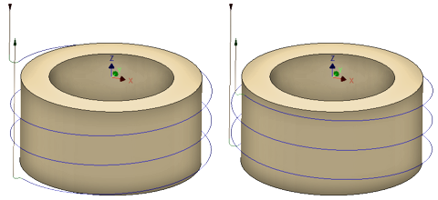

<div id="thread_threadingHand"><table class="tipTable" cellspacing="10">
<tr>
<td><center></center></td>
</tr><tr>
<td><center><p><b>Créez une direction de filetage à droite ou à gauche.</b></p></center></td>
</tr></table>
</div>